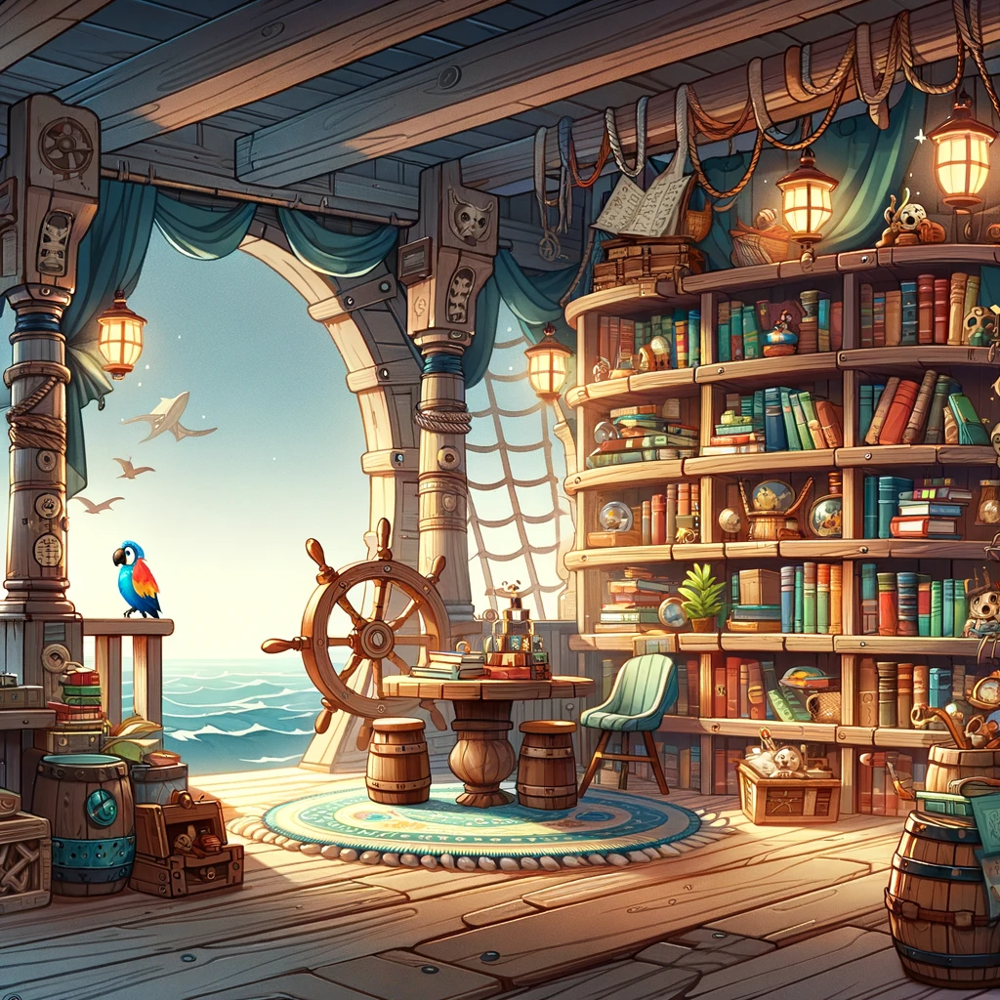

Apéndice: Recursos en Línea y Libros Recomendados#
En este apéndice, te proporcionamos una lista de recursos en línea y libros relacionados con Python y la temática de piratas para que puedas continuar aprendiendo y explorando este emocionante mundo de la programación y la aventura pirata.

Por supuesto, aquí tienes algunas referencias para recursos de programación dirigidos a niños. Estos recursos están diseñados para hacer que la programación sea divertida y accesible para los más jóvenes:
Sitios Web#
-
Code.org: Ofrece cursos interactivos y actividades de programación diseñadas para niños. Tiene tutoriales con temas populares como Minecraft y Star Wars. Sitio web: https://code.org/
-
Scratch: Una plataforma de programación visual desarrollada por el MIT. Permite a los niños crear proyectos interactivos y juegos. Sitio web: https://scratch.mit.edu/
-
Tynker: Proporciona lecciones de programación a través de juegos y proyectos creativos. Es ideal para aprender a programar jugando. Sitio web: https://www.tynker.com/
-
Khan Academy - Computer Programming: Ofrece tutoriales interactivos de programación que cubren conceptos desde la programación de dibujos hasta la creación de videojuegos. Sitio web: https://www.khanacademy.org/computing/computer-programming
Libros#
-
"Hello Ruby" por Linda Liukas: Un libro interactivo que introduce a los niños en el mundo de la programación a través de historias y actividades. Ver en Amazon
-
"Python for Kids" por Jason R. Briggs: Este libro utiliza Python como lenguaje de enseñanza y presenta conceptos de programación de manera accesible para los niños. Ver en Amazon
-
"Coding Games in Scratch" por Jon Woodcock: Enseña a los niños a crear sus propios juegos en Scratch, lo que les permite aprender programación mientras se divierten. Ver en Amazon
-
"Girls Who Code: Learn to Code and Change the World" por Reshma Saujani: Este libro inspirador se centra en la programación y la tecnología, especialmente dirigido a niñas interesadas en la programación. Ver en Amazon
Plataformas de Aprendizaje en Línea#
-
Bitsbox: Ofrece lecciones y proyectos de codificación para niños. También puedes suscribirte para recibir cajas de actividades mensuales. Sitio web: https://bitsbox.com/
-
Kodable: Diseñado para niños en edad preescolar y primaria, Kodable enseña conceptos de programación a través de juegos. Sitio web: https://www.kodable.com/
-
Codemoji: Ofrece cursos de codificación en línea diseñados para ser divertidos y fáciles de entender para niños. Sitio web: https://www.codemoji.com/
Estos recursos son excelentes opciones para que los niños comiencen su viaje en el mundo de la programación de una manera educativa y entretenida. ¡Esperamos que encuentres útiles estas referencias!
Libro Recomendado#
- "La Isla del Tesoro" por Robert Louis Stevenson: Si deseas explorar más la temática de piratas, no puedes dejar de leer esta novela clásica que inspiró tu libro de programación. Ver en Amazon